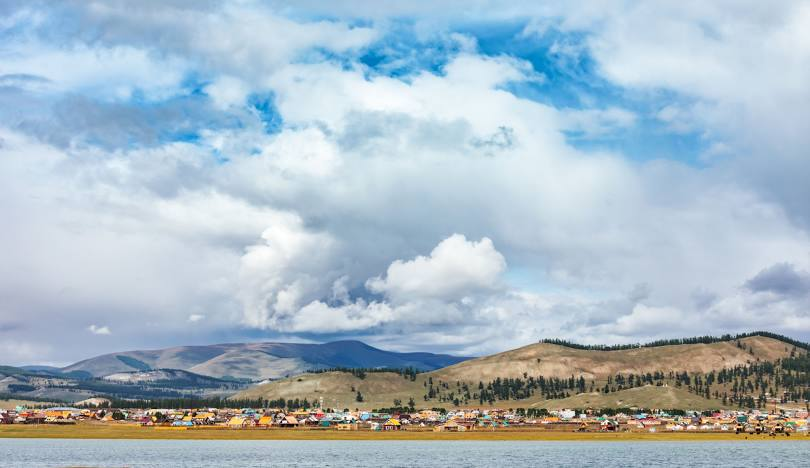
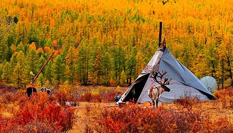

库苏古尔湖
蒙古的蓝珍珠
库苏古尔是蒙古最著名的淡水湖。松林、深蓝湖水、山缘与清凉空气，使这里成为北部最出片的地方。
可骑马、短徒步，或只在湖边放慢节奏。
北部
森林、淡水湖与凉爽的北部空气，是许多旅客心中的蒙古自然核心。
蒙古的蓝珍珠
库苏古尔是蒙古最著名的淡水湖。松林、深蓝湖水、山缘与清凉空气，使这里成为北部最出片的地方。
可骑马、短徒步，或只在湖边放慢节奏。

进入湖区的门户小镇
哈特嘎勒是许多库苏古尔行程的起点。交通、营地和南岸短途都从这里展开。
即使主要为了看湖，小镇也是落地与补给的实用节点。

比常规湖线更北的文化探险
库苏古尔泰加林以偏远森林和驯鹿牧民文化闻名，和大多数人想象的开阔草原完全不同。
路况与季节决定能否抵达，需预留弹性天数。